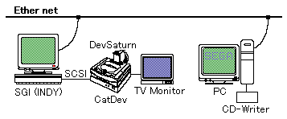

★SGL User's Manual
★開発環境
★SGL User's Manual
★開発環境
ツ ー ル | 機 種 名 | 備 考 |
|---|---|---|
| 開発ホスト | SGI INDY | CPU R4600SC,RAM 64MB以上,HDD 1GB以上,24bitカラー,20インチCRT |
| (IBM-PC互換機) | CPU 486(66MHz)以上、RAM 8MB以上、HDD 500MB以上、MS-DOS 5.0以降、MS-Windows 3.1 | |
| デバッガ | CartDev | SGI用デバッガソフトはGDI,PC用はSNASMを使用 |
| 開発ターゲット | DevSaturn | 映像を確認するためにTVモニターをDevSaturnに接続してください |
| 分 類 | ツール名称 | 備 考 |
|---|---|---|
| コンパイラ | GUIコンパイラ | セガ3Dゲームライブラリ(SGL)で使用 |
| アセンブラ | GUIアセンブラ | |
| リンカ | GUIリンカ | セガ3Dゲームライブラリ(SGL)で使用 |
| デバッガ | SNASM(PC) GDB(SGI) | セガ3Dゲームライブラリ(SGL)で使用 |
セガでは、次の開発環境を推奨します。
開発言語には、GNU Ｃ言語コンパイラを使用します。開発ホストに、SGI社製UNIXワークステーション INDYをネットワーク環境で使用し、CartDevを中間に挟んで、最終的にTVモニターを含むDevSaturnに接続します。 その構成図を次に示します。
図2-1 セガの推奨するプログラマ向けハードウェア環境

以降、本マニュアルではこの環境構成をもとに話を進めていきます。
★SGL User's Manual
★開発環境